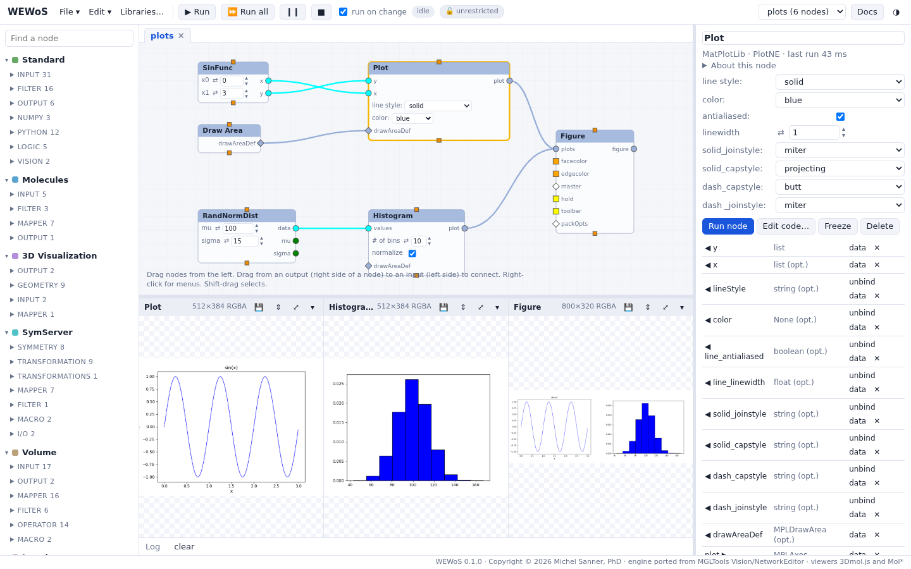

Images and plots
Show Image and the MatPlotLib nodes put their pictures in panels in the row under the network, next to the 3D viewers.
Images
The Imaging library works on Pillow images: Read Image, Image from array, Grab Image (a 3D viewer's picture), filters (blur, contour, edges, emboss, sharpen…), invert, split, masks, paste, blend, multiply, composite, rotate, transpose, scale, statistics, and Save Image. Show Image shows an image in a panel: its header gives the image's size and mode, and a 💾 button saves it. Each Show Image node has its own panel. See the tutorial An image viewer.
Plots

The MatPlotLib library is Vision's matplotlib nodes: plot, scatter, histogram, bar and barh, pie, polar, fill, log plots, stem, error bars, box plots, contour and filled contour, pcolor, spectral plots (PSD, CSD, specgram, cohere), quiver, table, legend, text, color bar. Figure puts several plots side by side, MultiPlot draws plots over each other, and Set Matplotlib Options takes options as a dict. Saving a figure writes a file in the network's folder.
The group Vision matplotlib examples (MGLTools) holds the 44 examples that came with Vision, with their data.
The row of panels
3D viewers, images and plots share the row under the network, from left to right. Drag the divider above the row to make it taller; in a panel's header, ⇕ gives the row the network's height too, ⤢ fills the window with the panel (Esc comes back), and ▾ folds it. The sizes are remembered by the browser.